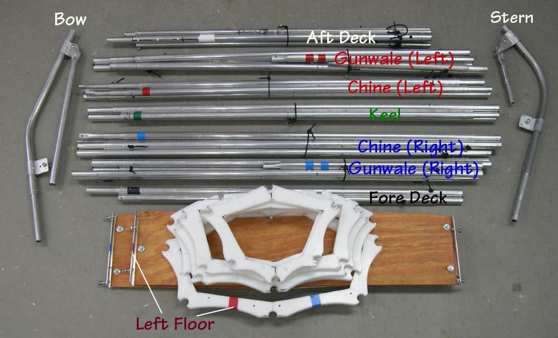

| Frame Assembly (3 of 8) | Menu Previous Page Next Page |
|
 The frame components are ready for assembly. The individual stringers are secured with small shock cords or rubber bands when packed. The frame will be completely assembled before the skin is attached and closed by a zipper. |
|